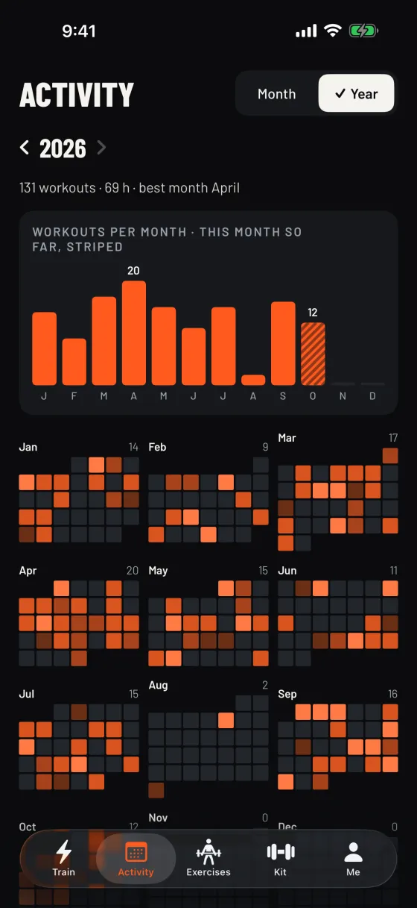

A WFH a felszerelésedből és a rendelkezésre álló percekből friss otthoni edzést készít, majd nagy időzítőkkel, ismétlésszámlálókkal és hangutasításokkal végigvezet rajta.
KézisúlyzóKettlebellEllenállásos gumiszalagHúzódzkodó rúdRúd és tárcsákTRXUgrókötélMedicinlabdaPadTornagyűrűHabhengerEvezőgépCsak a testedKézisúlyzóKettlebellEllenállásos gumiszalagHúzódzkodó rúdRúd és tárcsákTRXUgrókötélMedicinlabdaPadTornagyűrűHabhengerEvezőgépCsak a tested
850+gyakorlat, mindegyikhez leírt lépésekkel
27felszerelés-típus, a gumiszalagtól az evezőgépig
7nyelv, az angoltól a magyarig
0követő, fiók vagy reklám
Próbáld ki
Mondd el, mid van. Kapj egy edzést.
Ízelítő abból, hogyan tervez a WFH edzést, az app valódi gyakorlatlistájával. Az app emellett kiegyensúlyozza a mozgásmintákat, kerüli, amit megjelölsz, és tanul abból, milyen érzés volt az edzés.
Számolt szettek, időzített intervallumok és pihenők, mindez kéz nélkül. A sípolás és a hangutasítások lehalkítják a zenédet ahelyett, hogy leállítanák, az időzítő pedig zárolt képernyővel is megy tovább.
A terv
Minden nap friss edzés.
Add meg egyszer a felszerelésed: súlyzók súlya, gumiszalagok, rudak, hely és korlátozások
Válassz időt, célt és fókuszt, majd cserélj vagy dobj újra bármelyik gyakorlatot
Bemelegítés, erő, záró blokk és levezetés, kiegyensúlyozva és változatosan
Az eszközön futó MI változatos, de célra tartó edzéseket ad
Fejlődés
Lásd az egész évet.
Sorozatok, rekordok és trendek a saját edzéseidből. Minden az eszközeiden marad.

Megosztás
Készítsd böngészőben. Küldd linkként.
Az edzéskészítő teljes egészében a böngésződben fut. Válassz a teljes gyakorlatlistából, majd oszd meg a linket: megérintve egy „Megnyitás a WFH-ban” gomb jelenik meg, amely az appba teszi a tervet, felszerelés-cserével, ha valami hiányzik. (A készítő angol nyelvű.)
1KészítsdVálassz gyakorlatokat, szetteket és időket.
2Oszd meg a linketÜzenetek, AirDrop, Mail, bármi.
3Nyisd meg a WFH-banEgy érintés a másik iPhone-on.
Az edzések az eszközön készülnek. Semmi sem megy felhőalapú MI-hez.
✕
Fiók és reklám nélkül
Nincs regisztráció, követő SDK vagy analitika. Nem gyűjtünk adatot.
☁
A saját iCloudod
Az eszközeid közti szinkron a privát iCloudodat használja. Mi nem látjuk.
↗
Úgy osztod meg, ahogy akarod
A fájlok és linkek csak a tervet tartalmazzák: soha az előzményeket, értékeléseket vagy egészségügyi adatokat.
Kérdések
Jó tudni
Kell internetkapcsolat?
Nem. Az edzések teljes egészében az eszközödön készülnek és futnak.
Hallom az utasításokat zenehallgatás közben?
Igen. A sípolás és a hangutasítások rövid időre lehalkítják a zenédet vagy podcastodat, nem állítják le. A hang, a sípolás és a rezgés külön kikapcsolható.
Megy tovább az időzítő zárolt képernyővel?
Igen. A WFH a háttérben tovább méri az időt és játssza az utasításokat, amíg az edzés fut.
Mi van, ha nincs meg egy megosztott edzés felszerelése?
A WFH megjelöli azokat a gyakorlatokat, amelyeket a felszerelésedből nem tudsz megcsinálni, és indulás előtt cserélhetsz.
Milyen nyelveken érhető el?
English, Deutsch, Español, Français, Magyar, Polski és Português (Brasil), a teljes gyakorlattárral együtt.
Készen állsz, ha te is.
A felszerelésed. Az időd. Egy friss edzés egy érintésre.